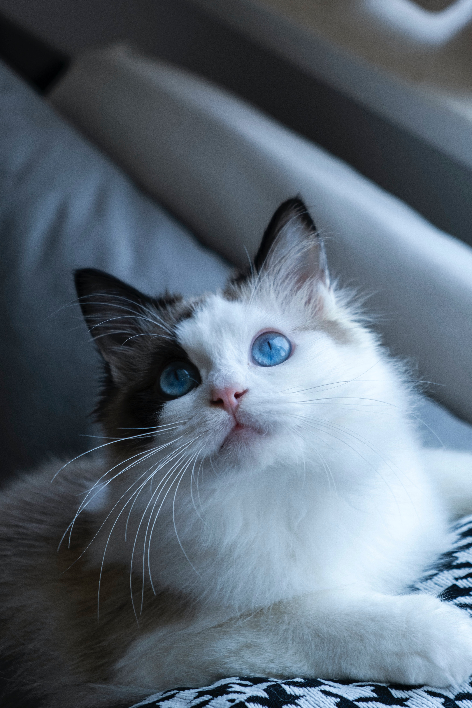
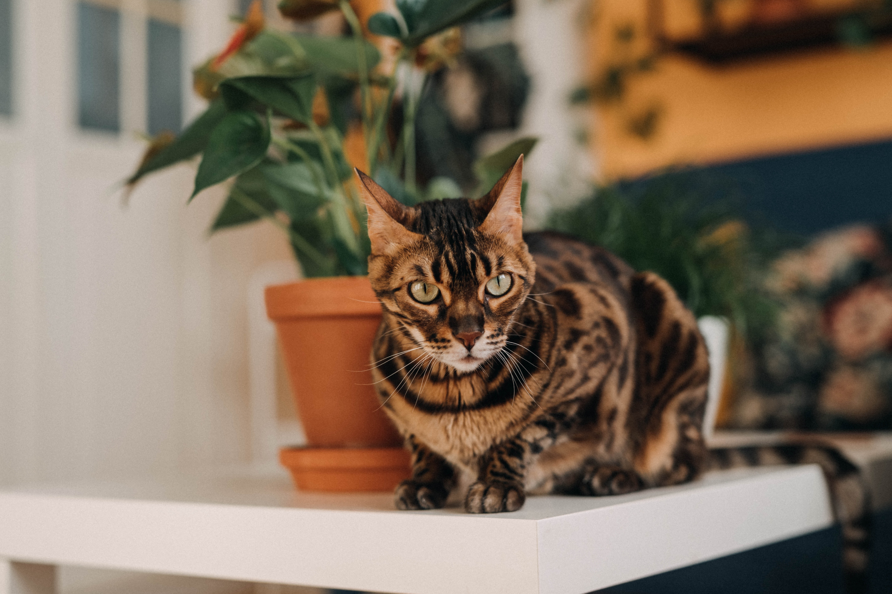

Cat Breeds
Want to know more about all the different cat breeds or just in the mood to look at pictures of cute cats? You've come to the right place!
This website is designed to increase your knowledge on the many different cat breeds!
Scottish Folds

Scottish folds are known for their unique and adorable folded ears
These folds are actually caused by a genetic mutation that affects the cartilage in their body to be underdeveloped and weaker, called Osteochondrodysplasia.
Domestic Shorthair

Domestic Shorthairs the most popular and common cat breed in the US! Many don't even consider them a singular "breed" but rather a mixture of many different cat breeds. Domestic Shorthairs come in a variety of different colors and coat patterns. Some include Tabby, Toriosshell, and Calico.
Sphynx

Sphynx cats are unique for the lack of fur on their bodies. Sphynx's originated from Toronto, Canada in 1966 when a hairless kitten was born from a litter of shorthair kittens, due to a genetic mutation. Friendly in nature and undeniably cute, these cats are one of the most popular cat breeds.
Oriental Shorthair

Oriental Shorthair cats stand out due to their large ears and angular faces. They are also known to "honk"! Click here to listen!
Ragdoll
Ragdoll's are often called the "dogs" of the cat species. Known to be affectionate and loyal, they will follow their owners their home around like a puppy. They were given their name because a common quality of most Ragdoll cats is that they will often go limp in their owners arms like a ragdoll!
British Shorthair

Famous for their round chubby faces, British Shorthair orginated from-You guessed it, Britan! These cats are calm, easy-going and make great pets.
Persian

The earliest proof of Persian cats dates back to the 1500s, while some suspect these cats to be around even longer than that! Perisan cats originated from Persia and are considered to be one of the oldest cat breeds. They have distictly unique features such as a "smooshed" face with a flat nose and a rounded head.
Siamese

The Siamese breed originated from Siam, Thailand. Siamese are very affectionate cats and are infamous for being the noisiest and most talkative cat breed. Listen to a Siamese!
Bengal
Bengal cats are different from most other cat breeds due to the fact that they are considered to be a hybrid of domestic and wild cats. Bengals were originally bred from Asian Leopard and Domestic cats. They are adorned with spots similar to their Leopard ancestors, giving them a wild and exotic appearance.